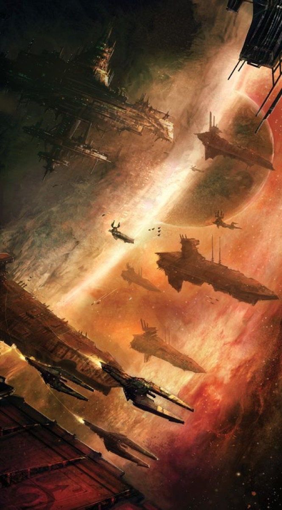

Gothic War
| Gothic War | |
|---|---|
| Twelfth of the Black Crusades | |
 Pict-capture of Battlefleet Gothic engaging a Chaos warfleet in the Gothic Sector Artwork © Games Workshop | |
| Date | 139–160.M41[a] |
| Location | Gothic Sector, Segmentum Obscurus; the neighbouring Athena and Cyclops sectors |
| Result | Imperial victory at great cost. Abaddon driven back into the Eye of Terror, taking two or more of the Blackstone Fortresses with him; four of the six Fortresses lost |
| Belligerents | |
Imperium Aeldari (from 151.M41) Aeldari (from 151.M41) | Chaos |
| Commanders and leaders | |
| Strength | |
| Casualties and losses | |
| Billions of Imperial citizens; scores of capital ships lost; most of Battlefleet Gothic's bases taken or destroyed | Four capital ships crippled and eleven escorts sunk at Gethsemane; a fleet destroyed by Aeldari warships; the flagship Soulless lost at Orar |
| Savaven, Fularis II and the Tarantis system destroyed; nearly nine in ten of Stranivar's people dead of thirst; the sector isolated by warp storms for the better part of a decade | |
The Gothic War, also called the Twelfth Black Crusade, was a war for the Gothic Sector of the Segmentum Obscurus, launched by Abaddon the Despoiler from the Eye of Terror in the early 41st millennium. Imperial scholars date it from 139.M41, when the first raids on outlying Imperial watch stations were recorded, to 160.M41, when the last captured world was returned to Imperial rule. The decisive fighting took place between 143 and 151.M41, years in which the sector was cut off from the rest of the Imperium by storms in the Warp and its defence rested on a single battle fleet.[1][2]
It was the most successful of the Black Crusades fought before the fall of Cadia, and the first in which Abaddon's armada used a weapon the Imperium could not match: six ancient alien fortresses called the Blackstone Fortresses, which had served the Imperial Navy as bastions for some ten thousand years. Abaddon captured at least three, and with them he destroyed a world, an atmosphere and a star. The war ended when Lord Admiral Ravensburg, with unlooked-for help from the Aeldari, forced the Despoiler to retreat to the Eye of Terror. Abaddon escaped with two of the Fortresses. They were seen again in the Thirteenth Black Crusade, some 850 years later.[1][3]
Background
[edit]The Gothic Sector
[edit]The Gothic Sector lies on the north-western edge of the Imperium, in the region of the Segmentum Obscurus nearest the Eye of Terror, and its principal naval station is the fortress world of Port Maw. It was an important region to the Imperium out of proportion to its size. Its worlds supplied fleets and soldiers to the war zone of the Cadian Gate, and its docks and forges repaired the ships that guarded the approaches to the Eye. The fleet that held it, Battlefleet Gothic, was one of the largest of the Imperial Navy's sector fleets, with seventeen major bases. Six of these stood on the Blackstone Fortresses, huge black bodies of unknown stone that the Imperium had found drifting in the sector during the 32nd millennium and had refitted with its own weapons.[1]
The Blackstone Fortresses had never been used to their full purpose. The Adeptus Mechanicus could not read their systems and the fleet treated them as massive, impregnable docks. It was a point of pride in Battlefleet Gothic that none of them had ever been taken by an enemy.[1]
The Black Crusades
[edit]Abaddon, Warmaster of Chaos and master of the Black Legion, had launched eleven Black Crusades before this one, each with a purpose that the Imperium understood only afterwards. By the 41st millennium the Inquisition had come to believe that every such war was a step towards a final assault on the Cadian Gate, and that the Gothic campaign was no exception. The aim of the Twelfth, in the opinion of the Ordo Xenos, was the Blackstone Fortresses themselves, which the Aeldari have long called the Talismans of Vaul and fear.[3]
Prelude (139–142.M41)
[edit]Arx and the watch stations
[edit]The first sign was a raid on the watch station of Arx, a minor post held by a small garrison of Imperial Guardsmen and a handful of tech-priests who maintained its auspex arrays. Its astropath sent a call for help in early 139.M41. When a relief force reached Arx four months later it found no enemy and no survivors, only the mutilated bodies of the garrison. Inquisitor Horst of the Ordo Xenos was sent to investigate and found little. Over the next three years similar raids were reported from neighbouring systems and sectors. Horst suspected a larger plan and could prove nothing.[3]
In 140.M41 patrol ships in the Athena Sector found a number of merchant ships and warships drifting, one of them an Emperor-class battleship. Their crews had died of a foul disease, and the ships bore signs of boarding. Navy rumour blamed the Plagueclaw, a ship of the Death Guard that had preyed on Imperial shipping for four thousand years. The sack of the hive world of Morganghast by the Death Guard was taken as confirmation that the Warp was moving.[1]
Panic in the Sector
[edit]Within the Gothic Sector itself the Navigators of the Navis Nobilite reported that warp storms were growing more frequent. On many worlds the news produced panic. Preachers declared that the Emperor was displeased and was sending the storms to scour sinners, flagellant sects grew to enormous size, and mobs hunted the impure through hive cities. In the confusion, covens of cultists took positions of power and spoke openly of a power that would save mankind when the Emperor had turned from it. The Ordo Hereticus could not root them out as fast as they grew. Several Navy ships were lost in dock to reactor failures and magazine explosions, which the Admiralty called accidents and the fleet called sabotage.[1]
The Hand of Darkness
[edit]Horst followed the trail to the world of Purgatory, where an ancient xenos machine called the Hand of Darkness lay beneath the surface. Its purpose was unknown, though Aeldari legends named it with dread. When he arrived the machine had been taken. A second artefact in the same legends, the Eye of Night, was held on the world of Ornsworld, where the Ratling inhabitants had once worshipped it in a statue. Horst raced for Ornsworld, but Chaos ships arrived first, blockaded the planet, and carried out a massacre of the Ratlings that cost tens of thousands of lives. The Eye was torn from its mounting. The enemy now held both artefacts, and Horst concluded that they were the keys to something the Imperium had not understood.[3]
The invasion (143–144.M41)
[edit]The first strike
[edit]At the end of 143.M41, as the warp storms reached their height, the Chaos fleets struck a dozen of the Navy's bases in the sector at once. Many Imperial ships were attacked at anchor or in dock. At Bladen, spatial torpedoes tore away the flight decks of the cruiser Rhadamanthine. At Cherys, bombers damaged the warp engines of the battleship Lord Sylvanus so badly that she could make no long jump for almost two years. Orbital docks fell or were destroyed, among them Tripol Docks, Port Imperial and Gathara Station, and several were turned against their makers. The raiders hit hard and withdrew, leaving Battlefleet Gothic with many of its capital ships crippled.[1]
Not every attack succeeded. At the hive world of Orar a Chaos warfleet under the warmaster Malefica Arkham found an Imperial battle group already on alert, preparing to leave orbit, and lost the flagship Soulless to a nova cannon shot from the battlecruiser Imperious. In the Cyclops Cluster a squadron of raiders ran into a nest of Ork freebooters and was destroyed to the last ship. These were rare victories. For the Navy the opening of the war was a series of losses.[1]
Blackstone IV and the Planet Killer
[edit]The first Blackstone Fortress to fall was Blackstone IV, which orbited the fifth world of the Rebo system. A Chaos fleet of twenty capital ships, probably led by Abaddon himself, overwhelmed the Imperial squadrons and approached the Fortress. At the moment it came into range the Fortress's power failed. Its guns would not fire, its hangar doors would not open, and its crew were left defenceless. The last transmission from its chief astropath described the fall. No one in the Rebo system survived.[1]
The Imperium learned the cost of this at Savaven, a Cardinal World of the Imperial Cult. The defence monitors were swept aside by a new Chaos vessel that the Navy named the Planet Killer. It took station over the world and fired a beam for about thirty minutes, which pierced the crust and the mantle beneath it. The magma rose through the wound. Oceans boiled, continents sank, and the planet was thrown out of its orbit and broke into a field of rocks. Imperial citizens knew of Exterminatus, but they had never seen a world destroyed from within. The effect on morale in the sector was severe, and Horst concluded that the weapon drew its power from the artefacts that the enemy had stolen.[1][3]

Lukitar, Brinaga and Fularis
[edit]In 144.M41 Abaddon's armada, now accompanied by a captured Fortress, entered the Lukitar system, where the Mechanicus had been researching improvements to Imperial shields and drives. Commodore Vandez of the Red Squadron saw the enemy first and could do nothing but withdraw. The Fortress reduced Lukitar Station to rubble in minutes. Vandez fell back to Brinaga, where Blackstone VI stood, and warned the defenders. They had too few ships and the second Fortress was shut down from a distance in the same way as the first. Brinaga fell to Abaddon four months later.[1]
The most terrible demonstration came at Fularis. Abaddon struck at Blackstone I, which stood near the second world of the system, and the Imperial defenders, who had just refitted the planetary batteries for such an attack, were confident. The log of First Lieutenant Elijah Borgia of the frigate Vindictive, recovered from her drifting wreck, records what happened. The two captured Fortresses took station beyond the range of the planet's guns and sent a beam between them toward Fularis II. The Vindictive was caught in its path and her hull vaporised. When the Navy returned, Fularis II had lost its atmosphere and been scoured to bare rock. Blackstone I was gone.[1]
The long war (144–149.M41)
[edit]For five years the fleets fought across the sector, which remained cut off from the rest of the Imperium. The Navy was on the defensive everywhere. Worlds changed hands several times. By 147.M41 the Lysades Sub-sector was almost entirely lost and Chaos warships held a dozen systems around Port Maw. In the Cyclops Cluster the Orks fought the Traitors as readily as the Imperium, and from the Quinrox Sound the fleet launched counter-attacks that bought time but not territory.[1]
The Imperial Navy was fighting two enemies. Aeldari corsairs, human pirates, renegades from the Eye and Ork freebooters, which the fleet called Wolf Packs, raided convoys and sacked cities while the Navy was occupied with the main enemy. The Aeldari of the Graildark Nebula, whose raids rose from three in 143.M41 to dozens by 147.M41, were suspected of working from a Craftworld the Navy never found. Supply convoys were blockaded. On the hive world of Stranivar three hive cities rioted over the loss of drinkable water, and nearly nine in ten of the population died of thirst before a convoy broke through. Ships returning to dock for repairs were often sent out again with half-filled magazines.[1]
The fleet found a rare success in the Quinrox Sound, where nearly two dozen pirate bands had united into a single armada. Fleet-Admiral Mourndark baited them with a convoy of empty transports, let one escape, and used the Navigator Absalom Draal to follow it through the Warp to the Barbarus Costa system. He destroyed the pirates there in a surprise attack and freed Ravensburg to turn his full attention to the Chaos warfleets.[1]

The Imperium resurgent (150–151.M41)
[edit]Gethsemane
[edit]For seven years the Imperium had fought defensively. In 150.M41 Lord Admiral Ravensburg resolved to attack. His enemies were more numerous but divided, and he hoped that he could destroy each Chaos fleet in turn by massing Battlefleet Gothic against it. The risk was that to concentrate the fleet he would have to strip convoy escorts and patrols. In mid-151.M41 scouts reported a Chaos fleet moving towards the Gethsemane system, and Ravensburg took personal command of seventeen capital ships and twenty escorts aboard the Divine Right.[1]
The pursuit was a trap. A second Chaos fleet of twelve ships fell on his advance squadrons, which lost three destroyers and four frigates before they could withdraw. For three days the two fleets circled each other in the system. When six Firestorm-class frigates found the enemy near Gethsemane II, Ravensburg attacked. His destroyers fired long-range torpedoes that forced the enemy to turn into his line. The Imperial capital ships passed through the screen of escorts at short range, crippled four capital ships and destroyed eleven escorts in a single pass. The Chaos Warmaster tried to flee, and at that moment Aeldari warships appeared in his path from nowhere and destroyed the rest of his fleet. Why the Aeldari intervened is not recorded. The common belief in the Navy is that they had learned that Abaddon held the Blackstones.[1][3]
Gethsemane came as the warp storms were fading. In the closing months of 151.M41 reinforcements from neighbouring battlefleets arrived, and with them the battle barges and strike cruisers of several Space Marine Chapters.[1]
Tarantis
[edit]Abaddon, with two or three Fortresses still in his hands, remained the greatest danger. He chose Tarantis, a system at the edge of the sector where Imperial reinforcements gathered before entering. His main fleet, accompanied by three Fortresses, tore a hole through the defenders and the Fortresses drove in, and in the course of the fighting millions of Navy crew and Guardsmen were killed. The Fortresses then joined their power, as they had at Fularis, and drove it into Tarantis's star. The star raged for a month, swallowing the two nearest worlds, and after four weeks it went nova. Everything in the system was gone, in a storm of plasma that extended for thousands of billions of miles.[1]
Schindelgheist
[edit]Ravensburg could not know which Fortress Abaddon would attack next. For six months Imperial and Aeldari ships searched. The Aeldari at last found the Chaos fleet in the Lower Lysades and traced its course through the Warp. It was headed for Schindelgheist, where the fifth Fortress lay. Using Aeldari webway gates, Ravensburg's fleet reached the system five days before Abaddon. The Chaos ships were outnumbered and ambushed. For three days the two fleets fought, until the Fortresses broke through the Imperial line and drove for the system's star.[1]
Only the battlecruiser Flame of Purity was close enough to intervene. Her weapons could not harm the Fortresses, but her captain, Abridal, put all of her power into her shields and drove her into the energy beams as they converged. The ship was destroyed at once, but the discharge exhausted the Fortresses' power. The star was saved. The Fortresses needed time to recover, and Ravensburg used it.[1]
Abaddon's retreat
[edit]Abaddon escaped into the Warp with two Fortresses, after a chase to the edge of the system and a jump dangerously close to the star. The third was isolated. Two strike cruisers of the Angels of Redemption Chapter, together with assault boats from the Divine Right, boarded it. They found no crew, and the interior bore no trace of the Mechanicus's work. The walls were black, veined, and pulsing with energy. About an hour after the boarding party arrived the walls turned red and a whine filled the air, and the party withdrew. The Fortress destroyed itself. At the same time, the other Fortresses across the Gothic Sector, those that had not been taken, destroyed themselves as well. Why is not known. Inquisitor Horst believed that something had decided that they were too dangerous to exist.[1][3]
Aftermath (152–160.M41)
[edit]With Abaddon gone, many of the other warmasters followed him to the Eye. Four battle groups hunted down those who remained. Admiral Storn's cruiser group fought Heinrich Bale's warfleet for two standard years in the Port Maw Sub-sector. Ravensburg turned two groups against the pirates that had flourished in the chaos, and the Ork bands of the Cyclops Cluster were driven from the worlds they had enslaved. The Imperial Guard, the Ecclesiarchy and the Inquisition took a further eight years to retake the captured worlds and root out the cults that had held them. Many of those worlds were ruined. Some, in the Graildark Nebula, still await relief.[1]
The cost to the Navy was very high, both in ships and in lives. The High Lords of Terra ordered the name of every crewman who served in the sector fleet inscribed on a monolith in the Chamber of Heroes of the Imperial Palace. Inquisitor Horst left the sector to hunt Abaddon and the missing Fortresses, and was seen only a few times after. He appears in the records of the Second War for Armageddon, and again in the search for the Eye of Night that Inquisitor Katarinya Greyfax conducted after 999.M41. That search is thought to have cost him his life.[3]
Legacy
[edit]The Gothic War bought the Imperium some eight centuries of quiet from the Despoiler's larger forces, though not from the raids of his lieutenants. It proved that the Black Crusades were not simply the largest of the Eye's incursions but campaigns with purposes, and it showed the Imperium that the Blackstone Fortresses, which had been refitted as docks, had been weapons whose use it did not understand.[2] The two Fortresses that Abaddon kept emerged in 999.M41, during the thirteenth and last of his crusades. One of them, the Will of Eternity, was the vessel that Abaddon drove into the surface of Cadia.[3][4]
The Navy's institutional memory of the war is long. The tactics of Gethsemane and Schindelgheist are taught at the naval colleges of Port Maw, and the Flame of Purity and Captain Abridal are named in the litany of the Imperial Navy. In the Gothic Sector the war is remembered by the ruins of Savaven, the asteroid field that orbits where the world once stood, and by the empty space where Tarantis burned.[1]
Timeline
[edit]Dated events of the war, in the Administratum reckoning. See also 41st millennium.
| Date | Event |
|---|---|
| M32 | The Blackstone Fortresses found drifting in the Gothic Sector and refitted by the Imperium. |
| Early 139.M41 | Raid on the watch station of Arx; its astropath calls for help. The war is counted from this year. |
| 140.M41 | Drifting warships, among them an Emperor-class battleship, found in the Athena Sector. |
| 139–142.M41 | Raids and disappearances across the sector as Warp storms rise. |
| Late 143.M41 | The Chaos fleets of Abaddon the Despoiler strike a dozen Navy bases at once; the open fleet war begins. |
| 144.M41 | Abaddon's armada, with a captured Blackstone Fortress, enters the Lukitar system; Brinaga and Fularis follow. |
| 144–149.M41 | The long war: the sector is cut off from the rest of the Imperium. |
| 147.M41 | The Lysades Sub-sector almost entirely lost; Aeldari raids from the Graildark Nebula multiply. |
| 150.M41 | Lord Admiral Ravensburg goes over to the attack. |
| Mid-151.M41 | Ravensburg intercepts the Chaos fleet at Gethsemane. |
| Late 151.M41 | Reinforcements and Space Marine Chapters arrive; Abaddon withdraws to the Eye of Terror with two Fortresses. The Navy's reckoning of the war ends. |
| 152–160.M41 | The remaining warmasters are driven out; the last captured world retaken in 160.M41. |
| 999.M41 | Abaddon's two Fortresses reappear in the Thirteenth Black Crusade. |
See also
[edit]Notes
[edit]- ^ The Administratum counts the war from the first raids on Arx in 139.M41 to the last reconquest of a captured world in 160.M41. Navy records count only the open fighting, from the first fleet actions in 143.M41 to the withdrawal of Abaddon in 151.M41. Both reckonings are in use.
References
[edit]- ^ a b c d e f g h i j k l m n o p q r s t u v w x McNeill, Graham. Iron Warrior (novella). Black Library, Chapter One. Thorpe, Gav. Eye of Night (Audiobook). Black Library.
- ^ a b Rennie, Gordon. Execution Hour (novel). Black Library. Rennie, Gordon. Shadow Point (novel). Black Library.
- ^ a b c d e f g h i Warhammer 40,000: Rulebook (5th Edition), pp. 116-117. Games Workshop. Codex: Chaos Space Marines (4th Edition), pg. 28. Games Workshop.
- ^ Battlefleet Gothic (Comic), art by Colin MacNeil. Black Legion: A Codex Chaos Space Marines Supplement (Digital Edition), pp. 42-46. Games Workshop.